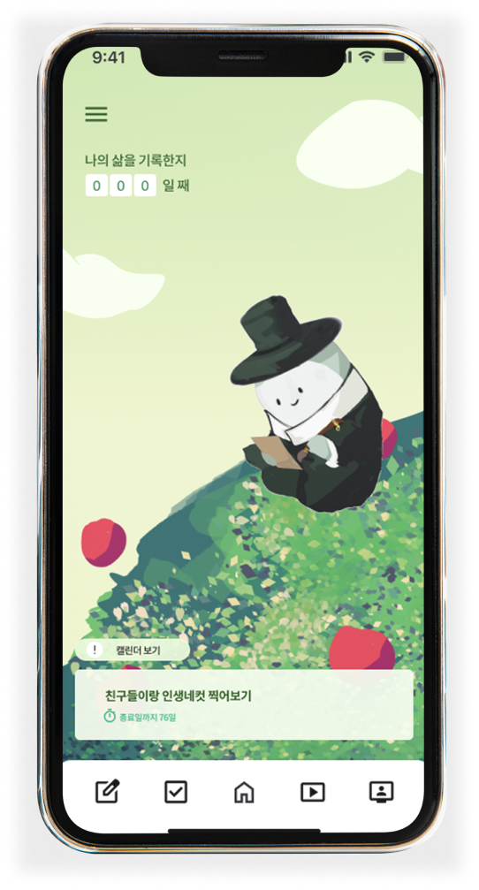
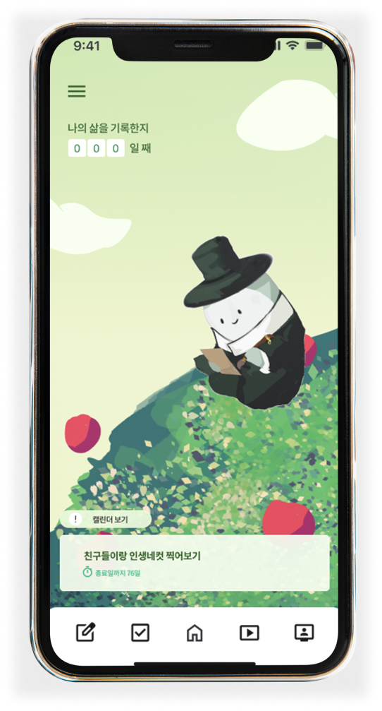
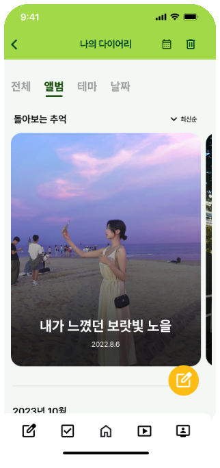
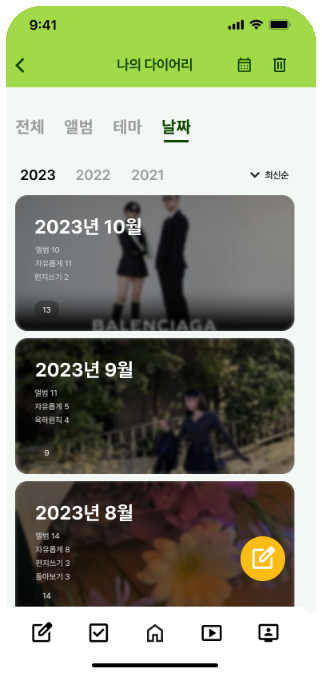
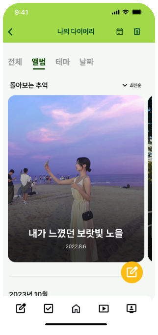
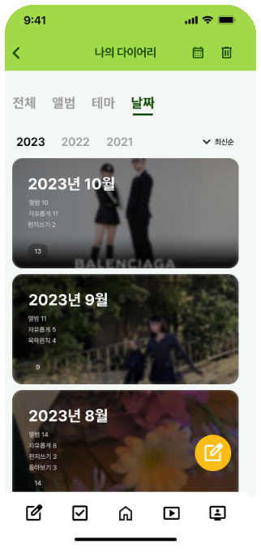

덕분에 잘 살다가 갑니다!
후회 없이
 

인생의 미련과 후회를
덜어보세요


죽음에 대한 두려움, 극복할 수 있을까요?
죽음에 대한 두려움은
회피만 해서는 이겨낼 수 없습니다.
죽음은 우리에게 반드시 찾아오는 순간입니다. 그러기에
죽음의 순리를 받아들이고 조금씩 준비해 나가는 것이 중요합니다.

죽음에 대한 다양한 고민들
어떻게 하면 좋을까요?
흉흉한 소식들이 무서워요
인생에 대해 회의감이 느껴져요 dhkdb
삶을 마무리 한다는 것은 무엇 인가요?


마인드 케어 다이어리 서비스
사과나무
사과나무는 다이어리를 기반으로 웰다잉을 도와주
마인드케어 서비스 입니다.
유서 작성
지나온 날들을 정리하고 유서를 일기쓰듯 만든
따뜻한 다이어리 기능입니다.
버킷리스트
목표하는 활동들을 리스트로 정리하고 완료된 활동에는
체크박스에 체크하여 분류합니다.
나의 하루 유서 작성하기
- #하루하루를 소중해하기
- #미련과 후회는 덜어내기
- #나를 되돌아보기
앱에서 제공되는 다양한 템플릿들을 통해 나에 대한 여러 이야기를 남겨보세요.
테마별로 그동안 작성해온 유서들도 모아볼 수 있습니다.
 



삶의 목표를 정해요
- #버킷리스트
- #목표 설정
- #달성해 나아가는 재미
이루고 싶은 일들을 버킷리스트에 작성하고 하나씩 달성해보세요.
각목표의 특징에 따라서 AI가 계획을 짜면 이를 캘린더에서 확인합니다.
웰다잉 배우기
- #강의
- #웰다잉에 대한 탐구
- #알면 알수록 안심
앱에서 제공하는 다양한 주제의 강의들을 시청하고 죽음에
대한
나의 고민, 웰다잉을 위해 나에게 필요한 것이 무엇인지
알아갈 수 있습니다.